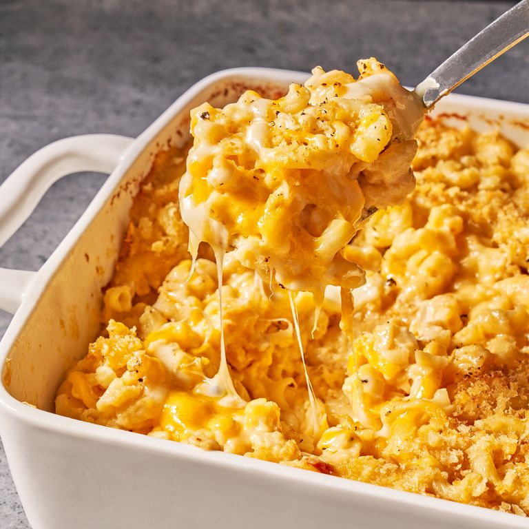

Mac and Cheese

Hot and Vibrant Mac and Cheese!
This recipe will teach you to make a simple but mouth watering macaroni and cheese recipe!
This dish dish should take an hour to make and will yield eight servings.
Ingredients
- 1/2 cup of butter, plus more for baking dish
- 1 lb. elbow macaroni
- 1/2 cup of all purpose flour
- 5 cups of whole milk
- 1 teaspoon mustard powder
- 1 teaspoon freshly ground black pepper
- 12 ounces shredded cheddar
- 8 ounces shredded Gruyere
- 3 ounces finely grated parmesan (about 1 1/2 cups), divided
- 1 cup panko bread crumbs
- 3 teaspoons extra virgin olive oil
Steps
- Preheat oven to 375°. Grease a 13"x9" baking dish with butter.
In a large pot of boiling salted water, cook macaroni, stirring occasionally,
until al dente, 5 to 6 minutes. Drain.
- In a large saucepan over medium heat, melt 1 stick butter. Sprinkle flour over and cook,
stirring, until slightly golden, 2 to 3 minutes. Pour in milk and whisk until combined.
Add mustard powder; season with salt and pepper. Bring to a simmer over medium-high heat and cook, stirring,
until sauce starts to thicken, about 2 minutes.
- Remove pan from heat and whisk in cheddar, Gruyère, and 1 cup Parmesan until melted and smooth.
Stir in macaroni and transfer to prepared dish.
- In a small bowl, combine panko, oil, and remaining 1/2 cup Parmesan.
Sprinkle over macaroni; season with more pepper.
- Bake mac and cheese until bubbly and golden, 25 to 30 minutes.
Let cool 10 minutes.